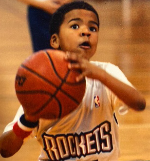

Ty's Future Stars Foundation was established to honor the life and legacy of Tykeem D'Majh Franklin by investing in the dreams, education, and development of young athletes.
Ty's Future Stars Foundation empowers youth through basketball, education, mentorship, and scholarship opportunities in honor of Tykeem D'Majh Franklin. Through community support and athletic development, we strive to help student-athletes reach their full potential both on and off the court.
To create opportunities that inspire the next generation of student-athletes to succeed academically, grow as leaders, and build brighter futures through the game of basketball.

Ty's Future Stars Foundation was established to honor the life and legacy of Tykeem D'Majh Franklin by investing in the dreams, education, and development of young athletes.
The foundation is committed to providing scholarships, mentorship, and positive opportunities that encourage youth to pursue success in academics, athletics, and life.
Read Ty's storyWe encourage young people to lead with confidence, integrity, and purpose in their schools, communities, and daily lives.
We believe education creates opportunities and empowers youth to build successful futures beyond athletics.
We promote hard work, dedication, accountability, and perseverance both on and off the court.
We are committed to strengthening our communities through mentorship, service, and positive youth engagement.
We strive to remove barriers and provide resources that help student-athletes achieve their goals and maximize their potential.
We honor Tykeem D'Majh Franklin's memory by continuing to inspire, uplift, and invest in future generations.
"Building Futures Through Basketball."
Ty's Future Stars Foundation was founded to carry Ty's light forward — transforming an unimaginable loss into a movement that lifts up young athletes.
Under her leadership, the foundation has awarded over $7,000 in scholarships and continues to grow its work in youth development, mentorship, and gun violence prevention.
Get in touch"She believes faith, love, and purpose can transform pain into legacy and is committed to helping others live with compassion, strength, and hope."
Whether you give, volunteer, or partner with us, there's a place for you in this mission.